02 — Colectivos18 oct 20263 placas
Día de la Madre: Ana Rossi
Desde fines de los 60 manejó colectivos en la línea 110, cuando casi no había mujeres al volante. Le dedicamos el Día de la Madre.
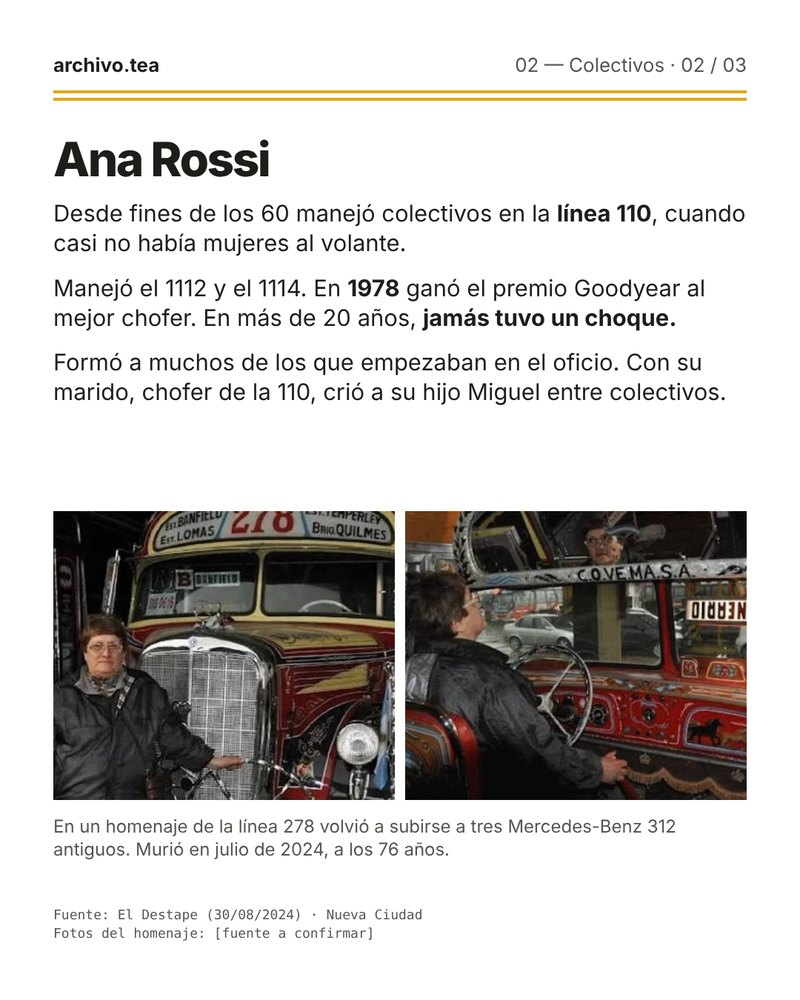
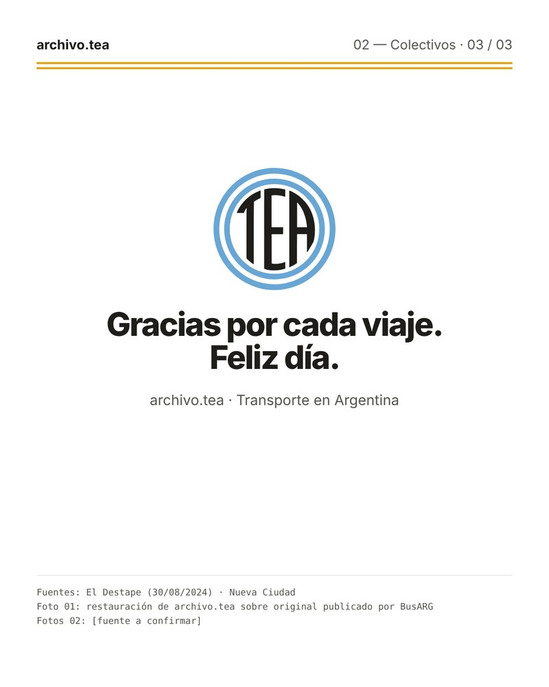
02 — Colectivos14 oct 20264 placas
02.01 · Mercedes-Benz LO 1114
La primera ficha completa: entre 1970 y 1988 salieron más de 29.000 de la planta de Virrey del Pino.
Ver la ficha02 — Colectivos14 oct 20266 placas
02.00 · ¿Cuánto tiempo de tu vida pasás en un colectivo?
Hicimos la cuenta, y te mostramos cómo: dato con fuente por un lado y estimación por el otro.
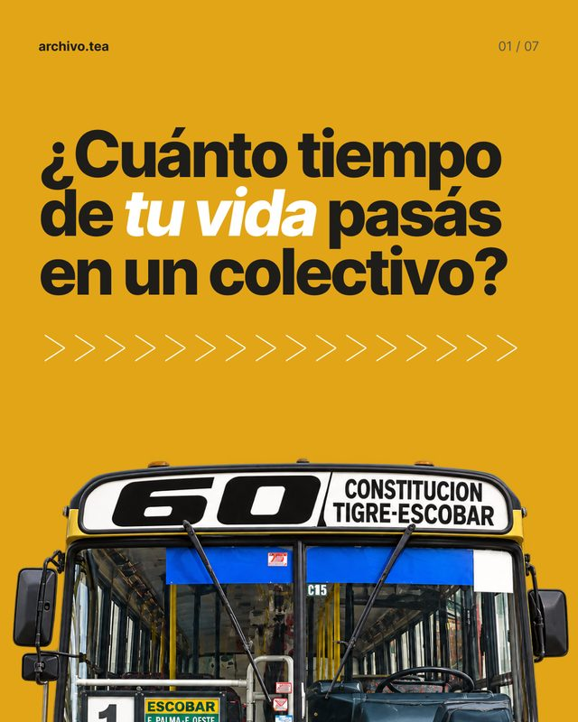
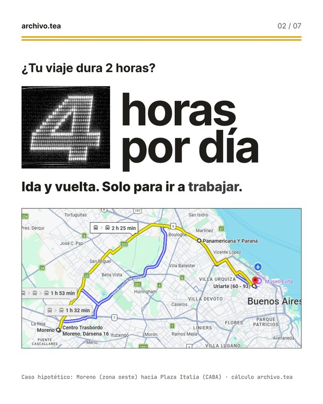
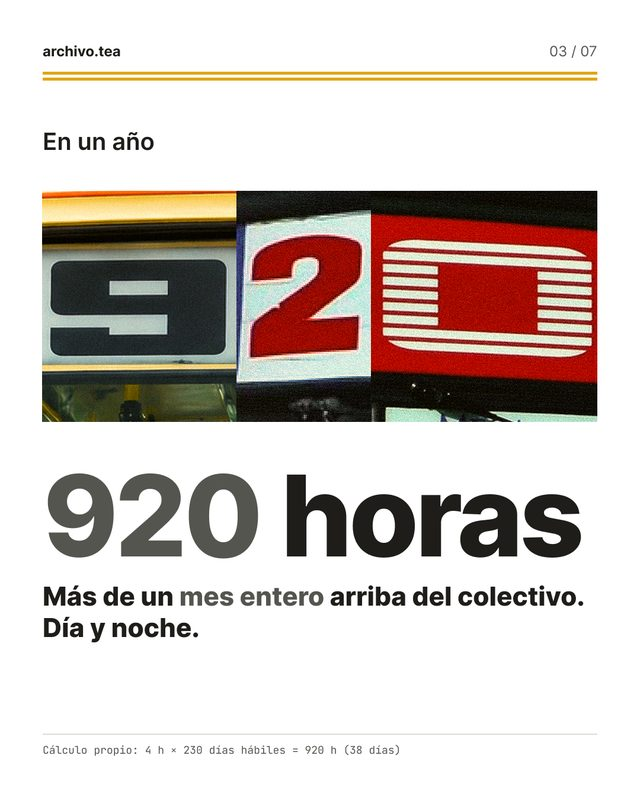
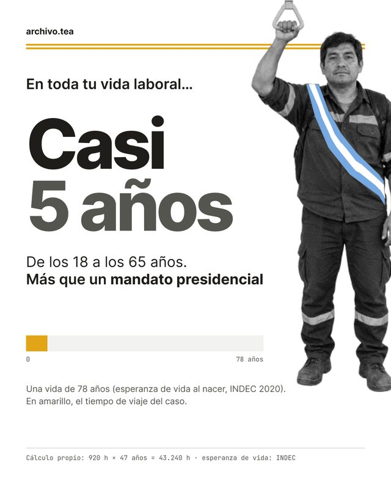
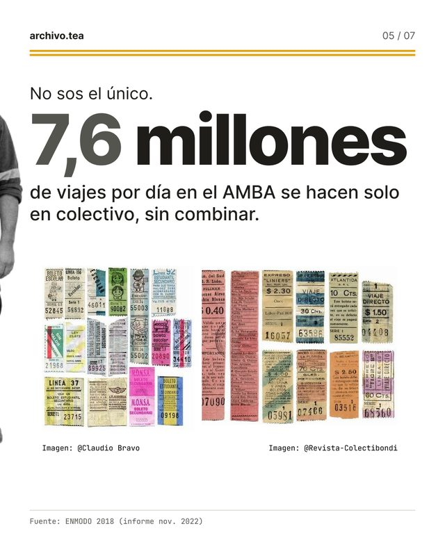
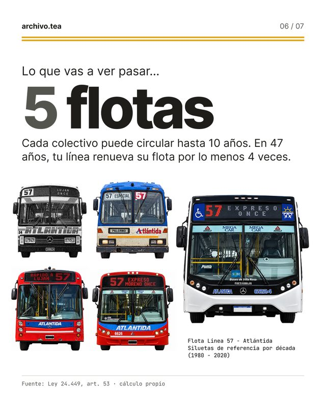
00 — General14 oct 20265 placas
Presentación de archivo.tea
Qué es el archivo, cómo se lee una ficha y cómo podés sumar lo tuyo.
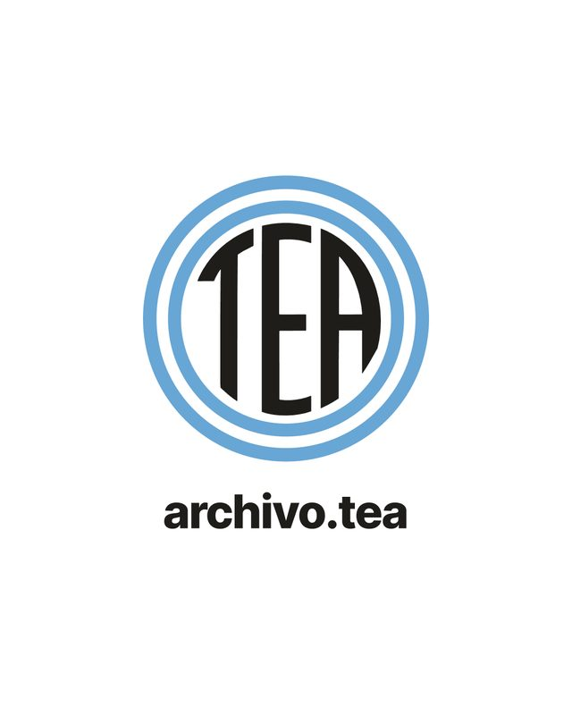
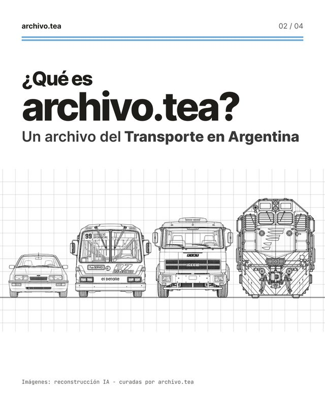
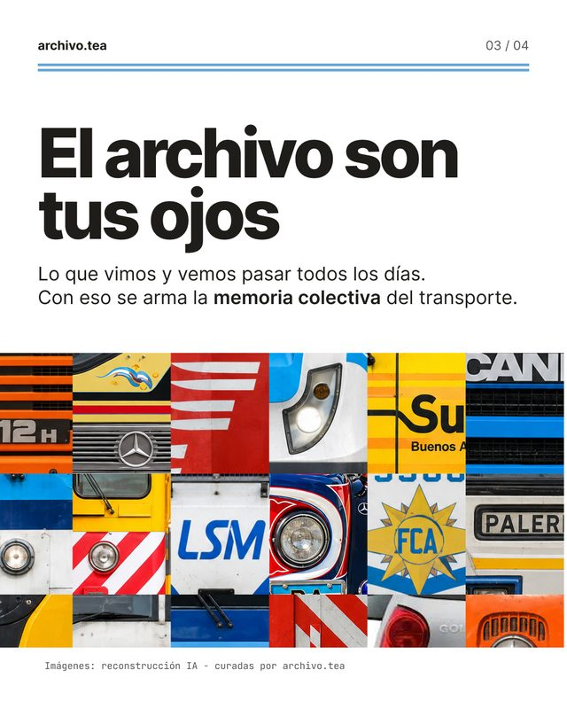
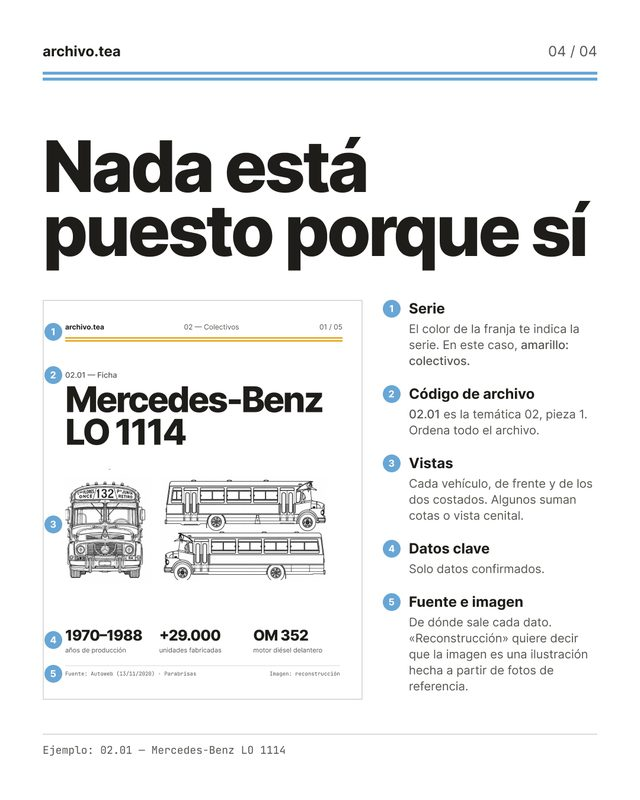
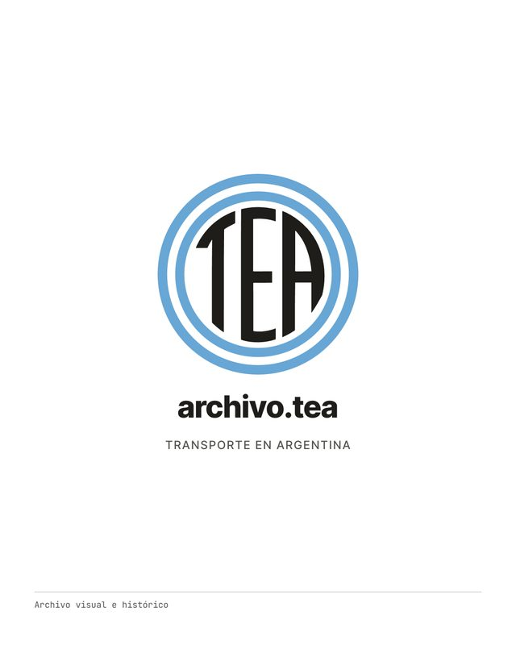